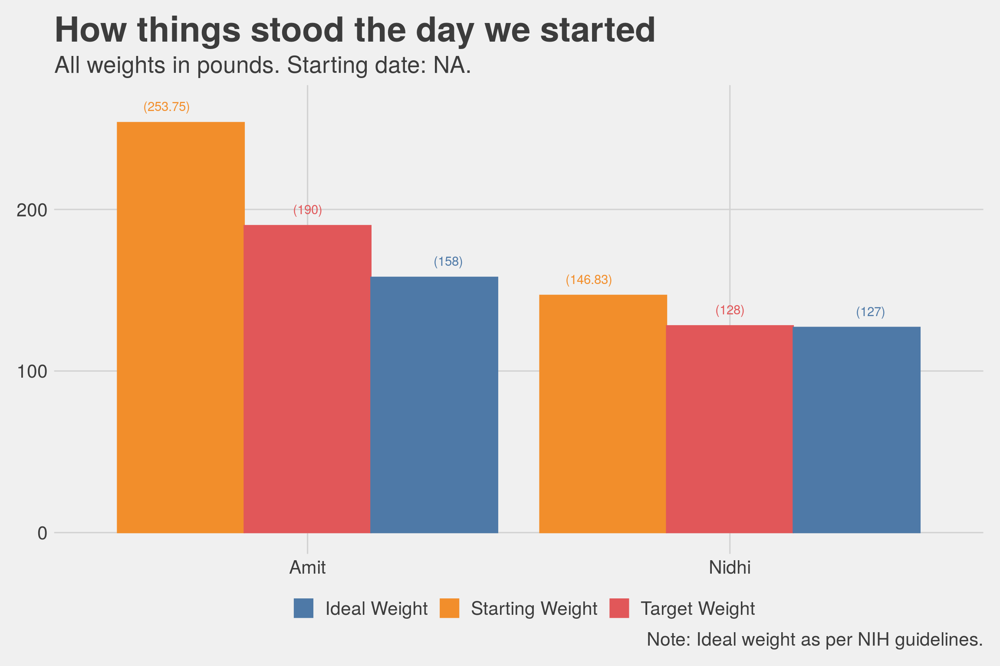

Chapter 2 How it began…
About 3 years ago i.e. in the spring of 2017, I decided to go to the doctor and ask why do I wake up with severe dry mouth every morning? I knew I was grossly over-weight and the dry mouth had started happening a few years ago and the two could be related. I kept ignoring it for years, but it has become bad enough that I sometimes used to wake up very early in the morning because of it and had to rinse my mouth to go back to sleep. The doctor’s visit was an eye opener, he said it is most certainly because you are grossly over-weight (i weighed 273 pounds) but asked a few more questions which led him to believe I had all the symptoms of sleep apnea.
TL;DR I did a home sleep apnea test and the results were very damning, he said it was so bad that I should be at the stage of losing short term memory i.e. because the sleep is so disrupted because of lack of oxygen that the brain is not able to make new neural connections that it usually does when we are sleeping. This was happening when I had just joined a masters program in data science at Georgetown University and was now part time at school, 16 years after having completed my engineering degree. With my day job and school homework, my sleep time was anyway much reduced and not getting quality sleep was just bad in so many different ways.
2.1 My tryst with a protein based diet
Something had to be done, i got on a weight loss program called “ideal protein” and started sleeping with a CPAP machine. I count those two decisions among the top 5 best decisions of all time I ever took in my life. I followed the ideal protein diet very strictly, of course my dear wife Nidhi was with me in this and she did the diet as well. I started losing weight immediately, sleeping with the CPAP machine was what I would call a life changing experience. I no longer felt like dozing off while driving to college, even if I slept 5 hours (which was 4 days a week) i still woke up refreshed and did not experience the mid afternoon crash in energy. In a couple of months the weight loss, in both me and my wife, was very noticeable and friends and family started asking what are you folks doing. Everyone is interested in the new diet which their friends are into, expected case of FOMO, i would say. In about 8 to 9 months, i had lost close to 70 pounds and my wife had lost close to 40 pounds, that is pretty drastic by any measure. It was expensive, effective and un-sustainable.
For about 10 months or so till I followed the diet, we were pretty script about no or as little carbohydrates as possible, and ate a lot of those ideal protein supplements (bars, shakes, snacks etc.). Then came the festival season, new year parties and there it was, the dreaded phase where I thought ok we can get off this horse for a little bit and then get back on when this season is over. No prizes for guessing, it never happened. I still remember my weight had gone down to 202 pounds and I could see it rising back up day after day. I thought ok this is still less than 210, i can pull it back, no problem. Well, not really, soon it was past 210. I told myself, ok but it is not 220, I can pull this back, once it crossed 230 I gave up trying.
I was able to graduate two years later (in 2019), my weight at 240 pounds and the CPAP machine by my bed every night. I did not even go for a weekend getaway without it. The dry mouth was getting back, not as bad though, but it was back, there was no missing it. The sleep was not as good. By end of 2019, i was 250 pounds, the CPAP machine was broken, my wardrobe almost completely redone because none of the clothes fit me anymore and I had given away all the clothes from 2017.
2.2 A new begining
Cliched as it is, i made a new year resolution, Jan 2020, i need to fix myself, this cannot continue. Nidhi had also gained weight, not as much as me, but she gained 20 pounds out of the 40 she had lost. She had mentioned to me in Dec 2019 that there was this personal trainer who had dropped in to the Doctor’s office (i conveniently skipped to mention that Nidhi became an ideal protein coach and started volunteering in the Doctor’s office) and left her card if someone coming in for weight loss wanted to come for a trial class at her gym.
It is said, good things happen when the time is right (ok yes, no one says that, I just made that one up :)). Nidhi left the trainer a message, and we did not hear back from her until a few days later when she said sure we could stop by her gym for a free class. There we were, on January 17th, 2020, in her gym, for what I would call the start of a new chapter in our life.
The gym itself was pretty unassuming, in an extended by disjoint part of her house. I did not think much of it, but little did I know what we were getting into. It needs to be said that prior to this I had never seen the inside of a gym in real life and my only window into how fitness equipment looks like and what trainers do was through films and TV, meaning what I knew was far from reality. I remember asking before the training “so what do you think, how many calories would we burn during the workout today?” and the answer I got was “oh I don’t know, we don’t count calories here :)”. “Ok, then” i remember saying to myself. The trainer seemed to be a pleasant person with an infectious smile, the training was good, tiring but not hard and I was like OK, this isn’t too bad.
We decided to enroll for two classes a week. Since we were just starting out and I needed individual attention, we decided why don’t we do a couples package where we would have classes for a month for just the two of us together. She also asked us to fill out a detailed log, as detailed as we could get, of everything we ate or drank for 3 consecutive days. It was not convenient but we scribbled something and gave it to her in the next class. The trainer had a small book that she and her husband had written about her journey with what they called (don’t know it might be a standard term) “clean eating”. There is a 30 day clean eating challenge in which you eat no processed food, no dairy, no pulses, no legumes, no hard drinks and no soft drinks either, only vegetables, fruits and meats are allowed. We decided to do the challenge and made a list of everything we thought we could eat during the challenge and got her to say Yay or Nay on each of those items. The list is in appendix A of this book. It had things commonly found in Indian kitchens like “spices”, “herbs”, different fruits etc. Now that I think about it, i am not sure what made me do the challenge, i just decided to do it just like I decided to workout in the gym twice a week, something that I had never done in almost my 41 years of life. To quote from a famous Hindi film “जब सोच गहरी हो जाएँ तो इरादे कमज़ोर पड़ जाते हैं” which loosely translated means “when thoughts become deep, intentions become weak”. So there we were, working out twice a week in the gym and decided to go for clean eating in a few weeks time.
What endeared me to the workout sessions was that after a few weeks I noticed both in myself and my wife there was an unmistakable feeling of joy/elation/happiness as we completed a hard training session in the gym. We did loose some pounds but nothing very noticeable. What attracted me to the clean eating was that I could identify with it, it did not claim any magic results, did not ask to give up on the basics i.e. vegetables/fruits/meat in fact it embraced these and only said do not eat processed food. This was the same guidance I had grown up with during my childhood, this was what my grandmother used to say as well, surely this could not go wrong. Surely nothing bad could happen by not eating cakes and cookies, not drinking soft drinks or hard drinks and just basically saying good bye to processed sugar. Made total sense.
So here we were, ready to start and reminding ourselves that the only way to reach the finish line is to start…. My target was simple i.e. “not to be obese” as per the NIH guidelines, provided https://www.nhlbi.nih.gov/health/educational/healthdisp/pdf/tipsheets/Are-You-at-a-Healthy-Weight.pdf. I do not remember the time I was at 158 pounds, i just wanted to be 190 or less so that I would not be adding to the “obese” population of the planet. Nidhi on the other hand was reasonably fit and her goal was pretty close to the NIH guidelines.
